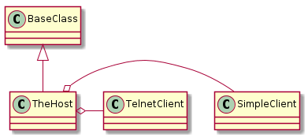
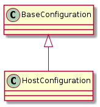

A bundle of client and some leftover methods and information. The Host builds the connection based on the identified connection type.
A place to store constants that other classes might need to refer to.
class HostEnum(object):
"""
A holder of Host constants
"""
__slots__ = ()
# options
control_ip = 'control_ip'
password = 'password'
connection_type = 'connection_type'
test_ip = 'test_ip'
username = 'username'
port = 'port'
timeout = 'timeout'
prefix = 'prefix'
operating_system = 'operating_system'
telnet = 'telnet'
prefix_command = '{p} {c}'
options = (control_ip, password, connection_type, test_ip, username,
port, timeout, prefix, operating_system)
# defaults
default_port = 22
default_type = 'ssh'
default_timeout = 1
default_operating_system = 'linux'
# end HostEnum
There used to be multiple hosts, but now there is one. It uses the connection type to build the other hosts and return them.

TheHost |
|
TheHost.client |
|
TheHost.exec_command |
|
TheHost.close |
|
TheHost.kill_all |
This is a configuration holder for host-configurations. It is created as an Abstract Base Class so that separate dut and server configurations can be used. They need to inherit from it and set the section name.

HostConfiguration |
|
HostConfiguration.example |
|
HostConfiguration.section |
|
HostConfiguration.control_ip |
|
HostConfiguration.password |
|
HostConfiguration.connection_type |
|
HostConfiguration.test_ip |
|
HostConfiguration.prefix |
|
HostConfiguration.timeout |
|
HostConfiguration.username |
|
HostConfiguration.operating_system |
|
HostConfiguration.kwargs |
|
HostConfiguration.reset |
|
HostConfiguration.check_rep |
| Attribute | Description | Default |
|---|---|---|
| control_ip | Hostname for the control interface | None |
| password | Login password | None |
| connection_type | Type of connection to the device | ssh |
| test_ip | Hostname for the test-interface | |
| username | Login username | |
| port | port for the connection | 22 |
| timeout | timeout for the connection | 1 |
| prefix | string to prepend to the commands sent to the device | None |
| operating_system | name of OS so commands can be altered as needed | linux |